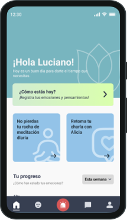
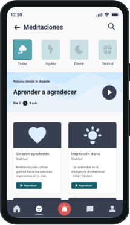

Alma
Aplicación móvil para jóvenes que buscan acompañamiento psicológico y bienestar mental.
- 🎨 Rol: Diseño de producto (UX/UI)
- 🛠 Herramientas: Figma, Adobe Illustrator, Adobe Photoshop.
*Nota: Esto en un proyecto conceptual y grupal.


Desafío
Diseñar una aplicación móvil intuitiva que permita a los jóvenes acceder a profesionales de la salud mental y ofrecer funcionalidades adicionales para gestionar el estrés y la ansiedad por falta de información o tiempo.
Proceso de diseño
En esta etapa, se investigó a fondo para entender las necesidades y problemas de los usuarios. Para esto, se realizaron entrevistas a 8 personas que ayudaron a crear un mapa de empatía, el cual mostró que muchos jóvenes sienten ansiedad, soledad, y la presión de lo que otros piensan. También se diseñó un "user persona", un perfil típico de usuario, como un estudiante que siente mucha presión por mantener su beca y le cuesta encontrar ayuda profesional accesible. Gracias a esta investigación, se descubrieron oportunidades para la app, como chats de confianza o seguimiento de hábitos
Aquí, se usó un "árbol del problema" para definir con precisión el reto principal: los jóvenes no saben cómo manejar su salud mental, sobre todo el estrés y la ansiedad, por falta de información, tiempo y dificultades diarias. Se identificaron los efectos de este problema (como frustración emocional o bajo rendimiento) y sus causas (incluyendo limitaciones económicas, el estigma de la salud mental o la falta de enseñanza para expresar emociones). Además, se aplicó la técnica de los "5 whys" para entender las razones más profundas y asegurar que la aplicación fuera realmente adecuada para los jóvenes
En esta etapa, se definieron las funcionalidades y la estructura de la aplicación. Se crearon un "user flow" y un "mapa mental" para organizar lo que haría la app y dónde estaría cada función. Para empezar a visualizar la interfaz, se realizó un "crazy 8" grupal, donde se eligieron las pantallas más adecuadas para cada función, como el inicio de sesión, la pantalla principal, meditaciones o el chat con profesionales. Los resultados de probar el primer prototipo también generaron nuevas ideas, como la de añadir una sección para explicar un concepto llamado "Tulipán" o resaltar el acceso al registro de emociones
Mockups

Resultado
El diseño final propone una experiencia visual clara y emocional, que guía a jóvenes en momentos de ansiedad o estrés, facilitando el acceso a acompañamiento profesional. El foco está en la navegación intuitiva y la contención emocional desde el diseño.
Aprendizaje
Este proyecto me permitió comprender la gran importancia del bienestar mental en la actualidad. Aprendí no solo a trbajar con equipos grandes de forma remota, si no también a que crear herramientas que faciliten el acceso a apoyo para la salud mental es muy beneficioso para los usuarios. Alma busca el potencial de una aplicación con muchas funciones y ventajas. Por ello, se destaca la importancia de seguir explorando y mejorando la experiencia para que los usuarios puedan aprovecharla al máximo.